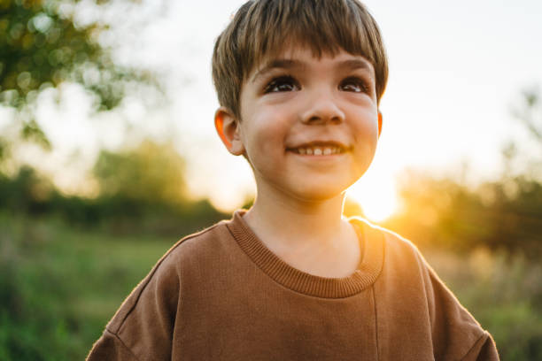

Me Parviz Uzoqov. Hozirda 41 maktabda o'qiyman. Kelajakda kampaniya ochmoqchiman bo'lishni xohlayman.
Bizning oilamiz juda ahil va quvnoq. Oilada 6ta kishi miz: dadam, oyim, opam, ikta singlim va men.